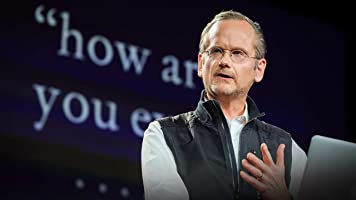

React state manafement in 2022 - Return of the Redux
At the beginning of the year if you told me I’d be publishing a recommendation to use Redux I would have laughed in your face. Yet here we are.Dec3 - 4 min read - React - Popilar on Medium

Kolby Sisk in Udacity Eng & Data
How To Sanitize Your Express App Against MongoDB Injection & Cross-Site Scripting
Easiest way to sanitiza your express appDec19 - 6 min read - Web Deweloper - Based on you reading history

Kolby Sisk in Udacity Eng & Data
Nov24 - 4 min read - Reactjs - Popilar on Medium

Kolby Sisk in Udacity Eng & Data
15 Best Web App Ideas for a Startup in 2021
We collected for you 15 tech startup ideas that have Uber-like potential this year.Dec3 - 4 min read - React - Popilar on Medium

Discover Medium writers you already follow on Twitter
Recommended Topics
Tecnology
Money
Business
Productivity
Physcology
Middfulness
Art
Who to follow

Lessig
law professore, activist

David Wineberg
Author, The Straight Dope, or What i learned from my first

Bonsu Thompson
Recently Saved
Kolby Sisk in Udacity Eng & Data